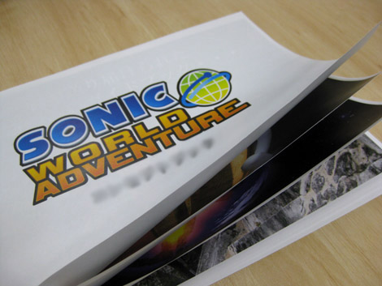
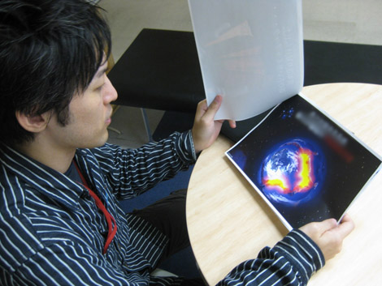

『発売前日☆ 橋本Dとハミだし！(前編)』
2009年02月18日
皆さまこんにちは！ マツバラです！
いよいよ！ いよいよです！
PS3/Xbox360版『SWA』発売まであと1日！
こんにちは、ヨシノです。
今夜寝たら、もう発売日ですね。
懐かしいなぁ。
高校生の頃、ゲーム発売日の朝といえば
待ちきれなくて早く起きすぎちゃって
ゲーム屋が開くのをカウントダウンしてたっけ……
……気合の入った女子高生だね。
さて、発売日前日と言えば、この人しかいない！
本日のハミだしブログのゲストは、
『SWA』ディレクターの橋本さんです！
「ゲスト」と書いて「いけにえ」と読みます。
橋本さーん！
橋本D ： はい。
皆さん、こんにちは。
『SWA』ディレクターの橋本です。
明日はいよいよ『SWA』PS3/Xbox360発売日ですね！
橋本D ： やっとこの日が！
……という感じだね。
今日は橋本さんに、『SWA』へのこだわりや情熱、
愛しさや切なさや譲れない思い出などを
遠慮なくハミだして頂きたく。
色々思い出しているうちに感極まっちゃって
目から汗がハミだしてもいいように
ティッシュもカートンで用意しました！
橋本D ： いらないよ(笑)
まあまあ。
実は今日という日のために
こんなものも入手していたのですよ。
橋本D ： え、何？

橋本D ： うわー、懐かしい！
これは、『SWA』の原案書だ！
表紙には、橋本さんのお名前が……。
もう2年以上前の日付で書かれてますね。
これでも眺めながら
いろいろなお話を伺えればと。
あ、ティッシュいります？
橋本D ： 泣いてないから(笑)
さて早速質問です！
この原案書を書くきっかけになったパッションは何ですか？
やはり悩み苦しみましたか？
橋本D ： いや、素直に、良い「ソニック」を作ろう、と……
なんともまったりした言い方ですね。
こんなに大きいタイトルなのに。
橋本D ： ただ、「ソニック」の決定版が作りたかったんだ。
丁度、当時、Xbox360/PlayStation3の映像の研究をしてたこともあって、
映像、ゲーム性、あらゆる意味で最高の「ソニック」が作りたい、
そういう素朴なところからこの原案書を作ったんだよ。

懐かしそうに原案書を見る橋本ディレクター
ほう。
では、構成は、結構スラスラまとまっていったんですか？
橋本D ： うん。
特に昼ステージのゲーム内容は、
初めに決めたものをそのまま作ったつもり。
一番最初に定めたコンセプトと全然変わってない。
原案書にも、
「高いクオリティのソニックを作る！」って書いてありますね～。
世界旅行、という、もうひとつのコンセプトは、
どこから出てきたんですか？
橋本D ： 次世代機で、
グッとくるくらいきれいな映像を作ろうと思ってたから。
美しい景色を見せるなら、やっぱり世界旅行かなって。
ほほう。
橋本D ： 素直に、良いものを作ろうと思ったから、
世界観も、ストーリーも、雰囲気も、
変にひねらず、王道で、素直に楽しめるものにしたつもりだよ。
では、
すべてがスラスラと出来上がっていったと！
創世神話のようですな。
1日目に橋本さんが「光あれ」と言えばGIテクスチャがつくられ、
2日目に橋本さんが昼ステージと夜ステージをわけ
3日目には陸地ができてステージとなり……
橋本D ： あのなあ……適当だな、君たち(笑)
もちろんというか、やっぱりというか、
開発にはすごく苦労したよ。
……ていうか、君たちもスタッフだしよ～く知ってるでしょ？(笑)
……では、明日！
その苦労の話をまったり聞きましょう！
それでは皆さま、
次にお会いするときは発売日です♪
日時: 2009年02月18日 16:00 | パーマリンク


 ソニックを愛する、元気な『SWA』2年目プランナー。
ソニックを愛する、元気な『SWA』2年目プランナー。 マイペースな『SWA』2年目プランナー。
マイペースな『SWA』2年目プランナー。
 ご意見・ご要望はこちら
ご意見・ご要望はこちら RSS
RSS